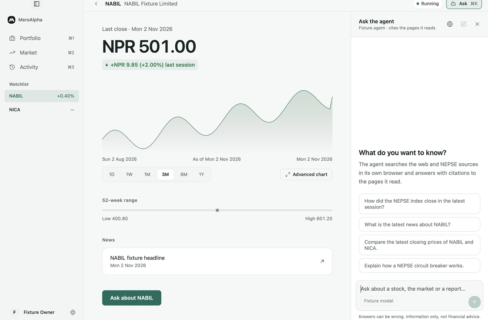
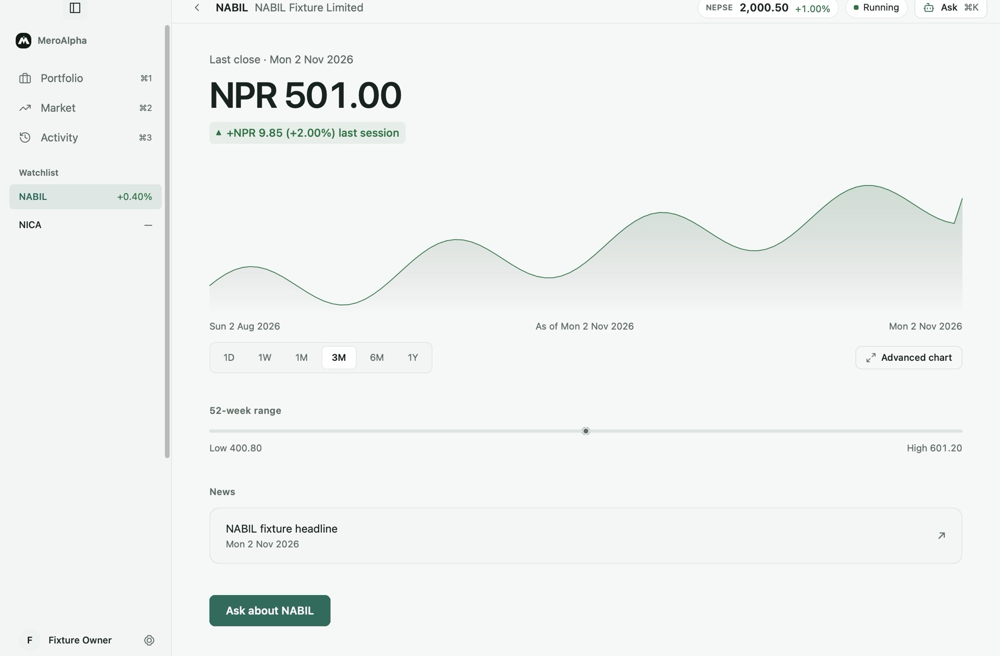
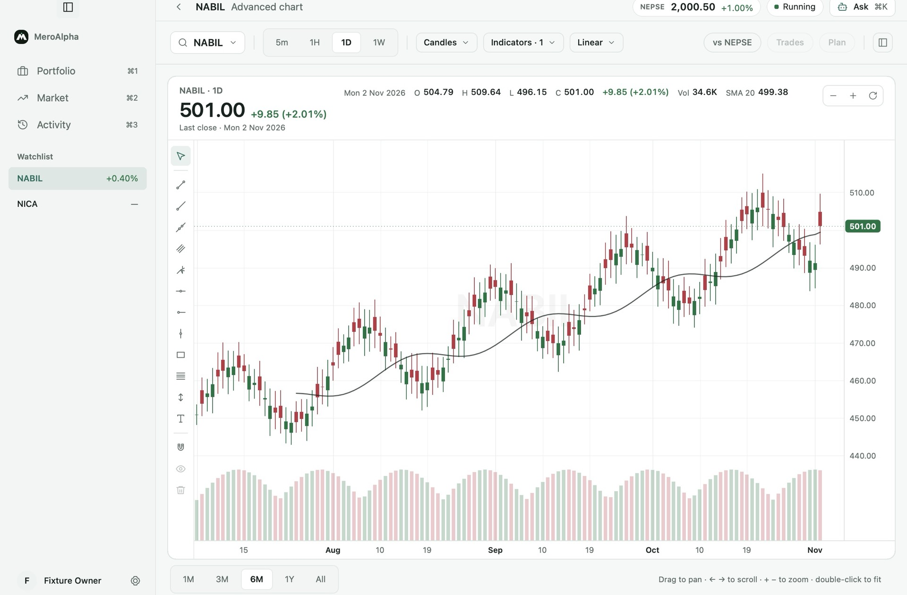
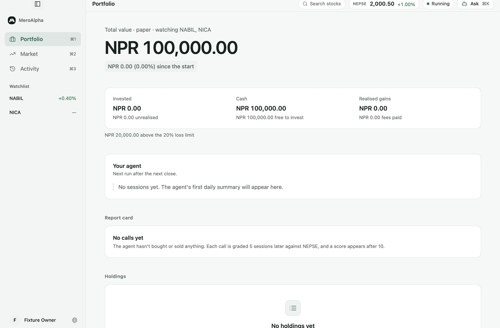

A NEPSE analyst that trades on paper
It researches in a browser you can watch, and cites every page.
Apple silicon. Virtual NPR only; no brokerage is connected.

Try it in your browser
The real app on invented data: set up the agent, then explore the portfolio, market and charts. No agent, market or account is connected.
Three screens, each with one job
The price, your paper position and the agent’s plan. Information only: there are no buy or sell buttons.

Candles, indicators and drawing tools, on MeroAlpha’s own chart engine.

Cash, holdings and the loss limit, and a report card for every call.

How a trading day runs
-
After the close
It scans the watchlist and drafts plans: an entry ceiling, a fixed stop and target, and 1% of equity at risk.
-
Every five minutes
A plan triggers on a five-minute candle above the first 15 minutes’ high, until 14:30 NPT.
-
The fill
Orders fill only from fresh trade prints, with fees, slippage and a 10% participation cap.
-
Five sessions later
Each call is graded against the NEPSE index, and the report card keeps score.
Your research stays on your Mac
- Local by default
- Captured pages, findings and the paper account live in your Library folder.
- Sharing is optional
- Signed in, it shares verified findings with their page’s address and hash, never the page.
- Your own agent
- Connect Claude or Codex over ACP, signed in with its own CLI.
See the full release history for all changes.
Let it trade on paper for a week
Then read its report card before you trust a single call.
npm install -g @agentclientprotocol/claude-agent-acp